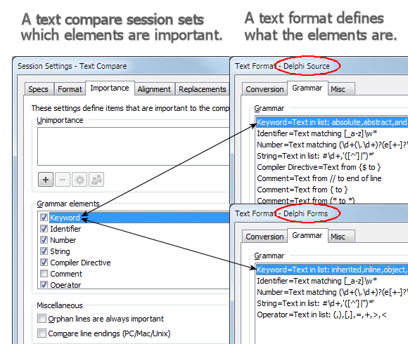

|
Dans Beyond Compare, les formats de fichier décrivent la syntaxe des natures spécifiques de fichier en définissant des éléments. Les formats de fichier sont automatiquement sélectionnés, et ce, en se basant sur l'extension des noms de fichier.
Une session de Comparaison de Textes définit quels éléments sont importants pour la comparaison. Notez que les paramètres de session traitent des éléments de manière plus abstraite alors que les différents formats de fichier traitent des détails de syntaxe.

Pour changer l'importance par défaut d'un type d'élément
| 1. | Dans l'arborescence des Sessions de la vue Accueil, sous la branche Nouvelle, faites un clic-droit sur Comparaison de Textes et sélectionnez Edition. |
| 2. | Allez à l'onglet Importance. |
| 3. | Cochez ou décochez les cases appropriées. |
| 4. | Cliquez sur Enregistrer. |
Pour passer outre de l'importance seulement dans la vue en cours de Comparaison de Textes
| 1. | Ouvrez Sessions > Paramètres de session  et allez à l'onglet Importance. et allez à l'onglet Importance. |
| 2. | Cochez ou décochez les cases appropriées. |
| 3. | Dans le bas du dialogue, choisissez Utiliser pour cette vue uniquement de la liste déroulante. |
Pour passer outre de l'importance dans une session de Comparaison de Dossiers
| 1. | À partir de la session de Comparaison de Dossiers, ouvrez une session fille de Comparaison de Textes. |
| 2. | Ouvrez Sessions > Paramètres de session et allez à l'onglet Importance. |
| 3. | Cochez ou décochez les cases appropriées. |
| 4. | Dans le bas du dialogue, choisissez Utiliser pour tous les fichiers dans la session parente de la liste déroulante. |
|